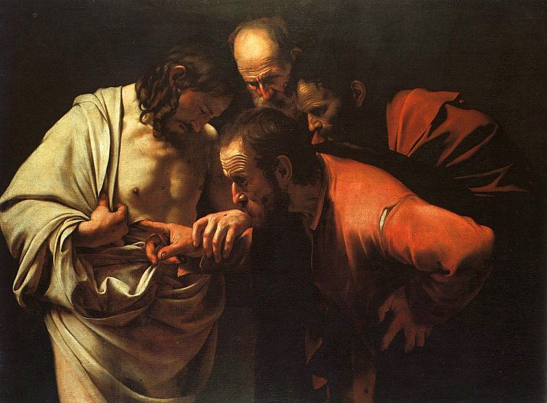
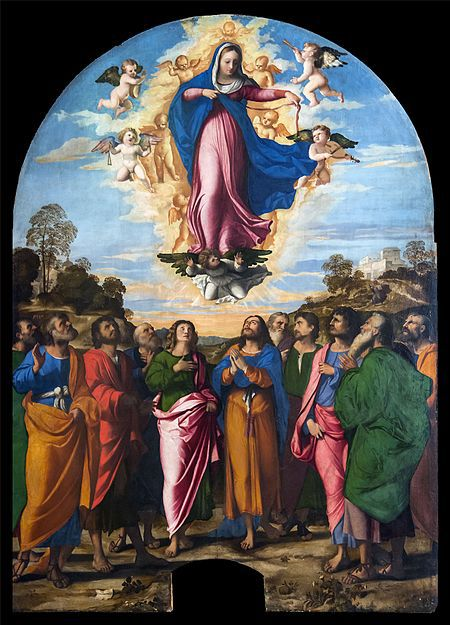
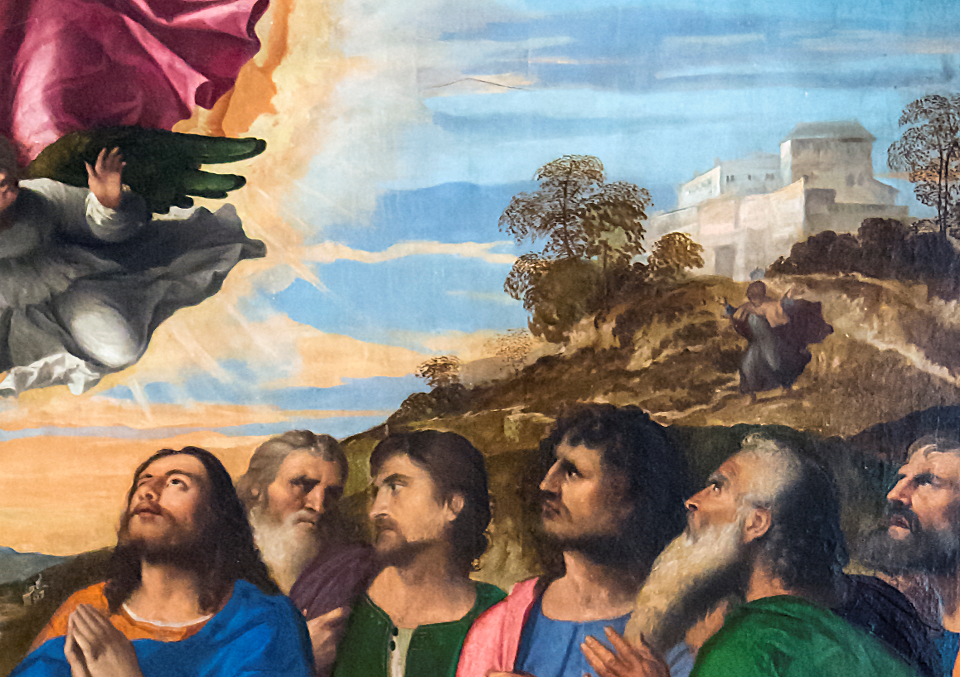
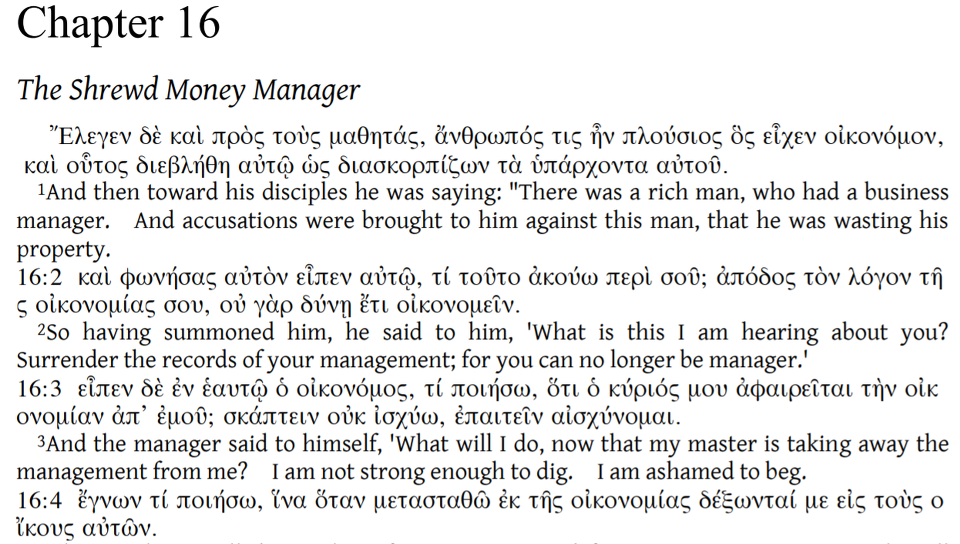
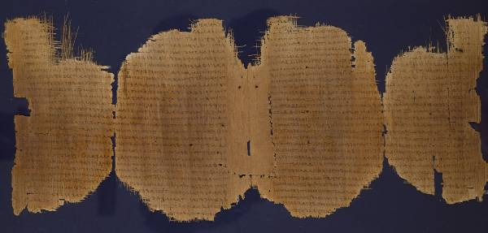

크리스마스 특집 : 누가복음 16장의 부정직한 청지기 이야기
게시: 2018-12-24T00:55:18+09:00
이번 글을 크리스마스 특집으로 성경 이야기입니다. 저는 정식으로 신학을 공부하기는 커녕 성경을 완독해본 적도 없는 동네 아저씨에 불과하니 진지한 신학 강론을 쓸 수는 없고, 그냥 가볍게 읽고 웃을 만한 이야기로 쓴 것입니다. '잘 모르는 평신도들은 별의별 생각을 다 하는구나'라고 그냥 가볍게 읽어주시면 고맙겠습니다.
저는 개신교 신자 같기도 하고 아닌 것 같기도 한, 그런 나일론 신자입니다. 제 와이프는 이대로 회개하지 않고 죽을 경우 제 가련한 영혼이 구원받지 못할 것이라고 무척 염려할 정도지요. 제가 제대로 된 신자로 인정을 못 받는 이유는 성서나 교회에 대해 자꾸 이런저런 의심을 하기 때문입니다. 그런 점에서 저는 12사도 중 절대 베드로 같은 사람은 아니고 의심많은 도마에 해당한다고 할 수 있습니다. 아마 저 같은 사이비가 자신을 도마에 비유한다는 것을 안다면 도마가 펄쩍 뛸 것 같기는 합니다.

(그 유명한 카라바죠의 명화 '성 도마의 의심'입니다. 예수님이 부활 이후 처음 나타나셨을 때 현장에 없었던 도마가 그 부활을 믿지 못하고 '예수님 옆구리의 상처에 손가락을 넣어보기 전에는 믿을 수가 없다'라고 말하자, 예수님께서 다시 나타나셔서 도마에게 정말 손가락을 넣어보게 하신 이야기가 요한복음 20장 24절에 나오지요. 저말고도 기독교에 사이비/나일론 신자들이 많은지라, 어떤 이들은 이 이야기를 두고 '예수님께 부활의 능력은 있지만 상처 치유 능력은 없다, 예수님은 힐러가 아니라 네크로멘서다' '예수님이야말로 진정한 좀비 창시자' 등등 온갖 우스개 소리를 늘어놓곤 합니다.)
(주님, 저들을 용서하소서, 저들은 그냥 한번 웃자고 한 짓입니다.)


(의심많은 도마의 이야기는 중세 유럽에서 또다른 전설을 낳습니다. 성모 마리아의 승천 때 선교 때문에 인도에 있었던 도마는 그 승천 모습을 볼 수 없었는데, 도마가 의심이 많다는 것을 잘 알고 있던 성모 마리아께서 도마에게 증거물로 자신의 허리띠를 떨어뜨려 주었다는 것이지요. 이 베키오의 명화 '성모 승천'에서 도마는 파란 옷 입은 사도의 머리 위쪽 언덕에서 달려오고 있는 중입니다. 영원히 조롱받는 의심많은 도마 T T )
어떤 분들은 성서는 사람이 그냥 쓴 것이 아니라 성령이 임하사 한글자 한글자 씌여진 것이기 때문에 (심지어 여러가지 번역본에서조차도) 토씨 하나도 실수로 씌여진 것이 없으니 모든 문장을 문자 그대로 받아들여야 한다고 말씀하십니다. 그런 점들 때문에 저로서는 받아들이기 몹시 어려운 방향으로 성서를 받아들이시는 분도 있습니다. 가령 어느 날 제게 문득 엉뚱한 의문이 들더라고요.
'흔히 성서에서 어린이들은 죽으면 그대로 천국에 간다고 하던데, 몇 살까지를 어린이로 인정해줄까 ? 그게 만약 만 14세라고 하면, 14번째 생일을 하루 남겨두고 죽은 아이는 천국으로, 하루 넘기고 죽은 아이는 지옥으로 가는 것일까 ?'
이 의문을 제 주변의 독실한 신자께 여쭈어봤더니, 천만뜻밖의 대답이 돌아와서 깜짝 놀랐습니다. '어린이라고 무조건 천국에 가는 것은 아니다, 성경을 찾아보면 어린이와 같은 마음을 가져야 천국에 간다는 것이지 어린이라고 무조건 천국에 가는 것은 아니다, 예수님을 믿지 않고서는 아무도 천국에 갈 수 없다'라고 하시더군요.
마태복음 18:3 KLB
이렇게 말씀하셨다. “내가 분명히 말해 둔다. 너희가 변화되어 어린 아이와 같이 되지 않으면 결코 하늘 나라에 들어가지 못할 것이다.
거기까지는 '그렇게 해석할 수도 있겠다' 싶었는데, 제가 '아니 그럼 아직 말도 못하는 아기들이 불행히도 병이나 사고로 죽을 경우, 걔들은 지옥으로 떨어지는 것인가요 ?' 라고 여쭈니 침통한 표정으로 답변을 하시더라고요. "...그래서 기독교인 부모의 제1 의무는 아이가 예수님을 영접할 때까지 죽지 않도록 잘 돌보는 것이다"
저는 아무리 성경이라고 해도 그렇게 글자 하나하나를 문장 그대로 받아들여야 한다고는 보지 않습니다. 신의 뜻은 미물인 인간의 두뇌로 이해하는 것도 어려운데, 하물며 어눌한 인간의 언어로 신의 뜻을 그대로 전달하는 것은 더욱 불가능하다고 보거든요. 성서는 은유와 비유가 가득한 책인지라, 예수님이 사람들에게 가르치려 하는 그 본질을 깨닫는 것이 가장 중요하다고 봅니다.
성경 말씀에 대한 해석은 종파마다 사람마다 매우 다를 수 밖에 없습니다. 예수님께서는 당시 로마 치하 팔레스타인 사람들이 쉽게 이해할 수 있는 비유를 써서 말씀하셨습니다. 그러나 현대의 우리는 당시의 관습과 상식, 그리고 언어를 이해하지 못하니 쉽게 이해하기 어려운 부분이 많습니다. 특히 성경은 원래 고대 히브리어로 적힌 구약은 말할 것도 없고, 아람어를 쓰셨던 예수님의 말씀을 그리스어(헬라어)로 적었다가 나중에 라틴어로 번역된 후, 다시 독일어 프랑스어 영어 등을 거쳐서 우리말로 다시 넘어온 것이다 보니 더욱 그렇습니다. 그래서 신학을 제대로 공부하려면 역사학은 물론 히브리어, 헬라어와 라틴어까지도 익혀야 하고, 전통적으로 유럽 사회에서는 가장 똑똑한 사람들이 신학을 공부했지요.

(영어-헬라어 대역본인 누가복음 16장입니다. 검색엔진도 구글번역기도 없던 중세 시절에 헬라어 원문으로 성서를 자유자재로 인용하시던 분들이 중세 유럽 정신 세계를 지배했던 것도 무리는 아닌 것 같습니다.)
그럼에도 불구하고, 누가복음 16장 1절부터 나오는 이 이야기는 여러 신학자들 사이에서도 여러가지 해석이 분분한 구절이라고 하더군요.
1 예수님이 제자들에게 이렇게 말씀하셨다. “어떤 부자에게 재산 관리인 하나가 있었다. 주인은 그가 자기 재산을 낭비한다는 소문을 듣고
2 그를 불러 물었다. ‘내가 너에 대해서 들은 소문이 도대체 어떻게 된 것이냐? 더 이상 내가 너에게 재산을 맡길 수 없으니 지금까지 네가 맡아 하던 일을 다 정리하라.’
3 그러자 그는 속으로 이렇게 중얼거렸다. ‘내가 일자리를 빼앗기게 생겼으니 어떻게 하면 좋을까? 땅을 파자니 힘이 없고 빌어 먹자니 부끄럽고 … … .
4 옳지, 알았다! 내가 이렇게 하면 쫓겨나더라도 사람들이 나를 자기들의 집으로 반갑게 맞아 주겠지.’
5 그러고서 그는 주인에게 빚진 사람들을 하나하나 불러다 놓고 먼저 온 사람에게 ‘당신은 우리 주인에게 진 빚이 얼마요?’ 하고 물었다.
6 그가 ‘감람기름 100말입니다’ 하자 그 재산 관리인은 그에게 ‘어서 앉아 이 증서에 50이라고 쓰시오’ 하였다.
7 또 다른 사람에게 ‘당신이 진 빚은 얼마요?’ 하고 묻자 그는 ‘밀 100섬입니다’ 하였다. 그래서 재산 관리인은 그에게 ‘당신의 이 증서에다 80이라고 쓰시오’ 하였다.
8 주인은 옳지 못한 이 재산 관리인이 일을 지혜롭게 처리한 것을 보고 오히려 그를 칭찬하였다. 이것은 이 세상 사람들이 자기들의 일을 처리하는 데 있어서는 빛의 아들들보다 더 지혜롭기 때문이다.
9 내가 너희에게 말한다. 너희는 자신을 위해 세상 재물로 친구를 사귀라. 그러면 그것이 없어질 때 그들이 너희를 영원한 집으로 맞아들일 것이다.
10 작은 일에 성실한 사람은 큰 일에도 성실하고 작은 일에 정직하지 못한 사람은 큰 일에도 정직하지 못하다.
11 너희가 세상 재물을 취급하는 데 성실하지 못하다면 누가 하늘의 참된 재물을 너희에게 맡기겠느냐?
12 또 너희가 남의 것에 성실하지 못하다면 누가 너희 것을 너희에게 주겠느냐?
13 한 종이 두 주인을 섬길 수는 없다. 그렇게 되면 한편을 미워하고 다른 편을 사랑하든가 아니면 한편에게는 충성을 다하고 다른 편은 무시하게 될 것이다. 너희는 하나님과 재물을 함께 섬길 수 없다.”
보통 '부정직한 청지기' 또는 shrewd steward 등으로 불리는 이 재산 관리인 이야기는 정말 이해가 잘 안 가는 구절입니다. 분명히 저 재산 관리인은 자신의 이익을 위하여 사문서 위조를 저지른 나쁜 사람이자 파렴치 범죄인입니다. 그런데 왜 피해자인 저 주인은 그 관리인을 칭찬한 것일까요 ? 또 왜 예수님께서는 저 이야기를 본받아야 할 좋은 예로 드신 것일까요 ? 이건 마치... 부자들의 재물은 불법적인 방법을 통해서라도 가난한 사람들에게 나눠주어야 한다는 빨갱이 선동으로도 들릴 수 있는 이야기인데 말입니다 !
찾아보니 여러 신학자들이 여러 견해를 내놓았고, 아직 (어쩌면 영원히) 명확한 정답은 없는 모양입니다.
1. 가장 전통적인 설 : 결과가 중요
과정이야 어찌 되었건 관리인이 결국 주인의 평판과 명예를 드높였으니 그 점을 칭찬한 것이라는 해석입니다. 중요한 것은 남들과 나누며 살아야 한다는 가르침입니다.
이 세상 모든 것은 주님의 것이요 우리가 우리 재산이라고 여기는 것은 그저 우리가 잠깐 가지고 있는 것 뿐이다 뭐 그런 설교가 이어집니다. 제일 무난하면서도 제일 지루한 해석이라고 생각합니다.
2. 금융공학적인 설 : 관리인이 탕감한 것은 자신의 커미션
이 설에 따르면 관리인은 자신의 이익을 위해 주인의 채권을 부당한 방법으로 탕감해준 것이 아니라는 것입니다. 이 이야기를 이해하려면 성경에도 자주 등장하는 직업인 당시 로마 제국의 세리(세금 징수원)에 대해 아셔야 합니다. 당시 로마제국은 이스라엘 같은 속주의 세금 징수를 현지 민간인들에게 위탁하는 방식을 썼습니다. 받아내야 할 세금이 10 데나리온이라면, 임명된 현지 민간 세금 징수원에게 (가령) 7데나리온만 가져오라는 식이었지요. 원래 피점령지 농민들에게서 세금을 받아내는 것이 어렵쟎아요. 그러니 3데나리온은 민간 세금 징수원에게 주는 비용으로 처리하는 셈이었습니다. 그러니 만약 민간 세금 징수원이 원래 세금을 다 받아낼 수록 징수원의 이익이 많아지는 것입니다. 따라서 징수원들은 대부분 세금을 난폭한 방법을 써서라도 악착같이 받아냈고 그 때문에라도 동족의 고혈을 짜내 로마제국에 바치는 민족 배신자로 여겨졌습니다.
이 설에 따르면 주인과 관리인도 이와 비슷한 관계였다는 것입니다. 따라서 관리인이 채무자들에게 탕감해준 빚은 주인의 계좌로 들어가야 할 원금이라기보다는 관리인의 몫으로 가는 커미션이라는 해석입니다. 이 해석에 따르면 관리인은 자신의 경제적 이익을 포기하며 주인의 명예를 높였으니 칭찬을 받은 것입니다. 많은 개신교 목사님들 뿐만 아니라 (영문 위키에 따르면) 카톨릭에서도 이 설을 주로 채택한다고 합니다.
매우 마음에 드는 해석이기는 한데, 그렇다면 관리인이 자신의 커미션을 포기하는데 왜 채무자들에게 찾아가 대출문서를 새로 작성하는지가 설명이 안 됩니다. 게다가 왜 밀 100석을 꾼 사람에게는 80석로 줄여주고, 올리브유 100말을 꾼 사람에게는 50말로 줄여주는지도 의아합니다. 저는 이 문제에 대해 주변 사람들과 논의를 하다가 나름대로의 이론을 제시했었습니다. 곡식은 보관이 상대적으로 쉽기 때문에 원래 커미션으로 20%만 주지만, 올리브유는 깨지기 쉬운 토기 항아리에 담아야 하는 등 취급이 어렵기 때문에 커미션으로 50%를 준 것이라고요. 현대에서도 원유 같은 액체 상품은 보관료가 비싸거든요. 그러니까 제 말을 듣던 사람이 이견을 내더라고요. "하지만 곡식은 쥐가 파먹는데요 !" 제 이론은 회사원들 술자리에서 나온 반론조차도 감당을 못하더군요.
3. 해학 풍자설 : 관리자를 비꼬는 유쾌한 설교
이 설은 예수님께서 꼼수를 써서 자신의 이익을 꾀하는 부정직한 관리자를 냉소적으로 풍자하는 설교를 하셨다는 것입니다. 제가 다른 책에서도 읽기에, 예수님의 설교는 우리가 흔히 생각하는 것처럼 엄숙-근엄-진지하지 않았고 풍자와 해학이 가득차 있었기 때문에 그 설교를 듣는 유대인들은 자주 폭소를 터뜨리며 웃었다고 합니다.
4. 편집 실수설 : 성서를 편집하는 과정에서 뭔가 실수가 있었다 ?
이건 진짜 소수설로서, 제대로 된 연구에서는 이런 주장하는 것은 못 봤고 인터넷 홈피 등에서만 봤습니다. 다만 저도 이 설이 완전히 말도 안되는 이야기라고는 생각하지 않습니다. 예수님께서는 항상 배운 것 없는 서민들이 알아들을 수 있는 쉬운 비유로 설교를 하셨습니다. 그런 분이 이렇게 사람들에게 혼동을 일으키는 모호한 설교를 하셨을 것 같지는 않습니다. 실제로 누가복음은 예수님의 언어인 아람어로 쓰인 것이 아니라 해외 교포 유대인들을 위해 헬라어로 쓰인 책입니다. 그나마 원본은 (어쩌면 당연히) 분실되었고 지금 우리가 읽고 있는 누가복음은 복사본의 복사본(third-generation copies)에 근거한 것이라고 합니다. 그런 복사본들 중 내용이 정확히 일치하는 것은 하나도 없다고 하네요.

(3세기 경에 씌여진 파피루스 종이 위의 누가복음입니다.)
저 개인적으로는 어느 설이 맞는지 모르겠습니다. 다만 맨 마지막으로 하셨던 말씀은 확실하다고 봅니다. "너희는 하나님과 재물을 함께 섬길 수 없다.” 여러분, 어려운 이웃과 나누고 삽시다. 그것이 크리스마스 정신입니다. 나중에 선거 때가 되면 당 이름이 무엇이든 간에 서민들을 위한 복지 확대를 추구하는 쪽에 표를 던져 주세요. 적은 돈이라도 기부도 하시고요. 저도 천국에 갈 정도는 아니더라도 최소한 지옥에 갈 때의 자기 변호를 위해서 눈곱만큼 정도의 기부는 하고 있습니다.
이번 포스팅은 레미제라블 중에서 미리엘 주교의 일화를 인용하면서 끝냅니다. 저는 저 제보랑씨가 마치 저처럼 느껴져요.
레미제라블 중에서 -----------
주교의 설교 주제는 자선이었다. 그는 부자들이 지옥을 피해 천국에 가기 위해서는 가난한 이들에게 베풀어야 한다고 강조하며, 지옥의 끔찍함을 생생하게, 그리고 천국의 아름다움을 달콤하게 묘사했다. 청중 중에는 은퇴한 부유한 상인이 있었는데, 이름은 제보랑이라고 했고 고리대금업자처럼 탐욕스러운 사람이었다. 그는 나사천과 서지(serge) 천, 모직천 등을 제조하여 50만 프랑(현재 가치로 약 50억원)의 거액을 모았는데, 평생 불쌍한 거지에게 단 한 푼도 동냥을 한 적이 없었다.
그 설교 뒤에, 제보랑씨가 일요일마다 성당 입구에서 가난한 여자 거지들에게 1수(sou, 현재 가치로 약 500원)를 나눠주는 것이 목격되었다. 그 1수를 여섯 명의 거지들이 나눠가져야 했다. 하루는 미리엘 주교가 그가 그런 자선을 베푸는 것을 보고, 미소를 지으며 여동생에게 말했다.
"보려무나. 저기 제보랑씨가 천국을 1수 어치 사고 있구나."
--------------------------------
(오해하시는 분은 없겠지만 노파심에서 이야기하자면 미리엘 주교는 분명히 냉소적으로 제보랑씨를 비웃고 있는 겁니다.)
Source : https://en.wikipedia.org/wiki/Thomas_the_Apostle
https://en.wikipedia.org/wiki/Girdle_of_Thomas
https://en.wikipedia.org/wiki/Gospel_of_Luke
https://www.bible.com/ko/bible/86/LUK.16.KLB
https://www.krm.or.kr/krmts/search/detailView.html?selectedColls=Expression&category=Report&m201_id=10020367&actionUrl=search/detailView&local_id=10021458&dbGubun=SD&index=&baseUrl=/krmts&reportGubun=RS&metaDataId=&linkingentry=2009-327-A00255¤tGroup=frbr
https://en.wikipedia.org/wiki/Parable_of_the_Unjust_Steward